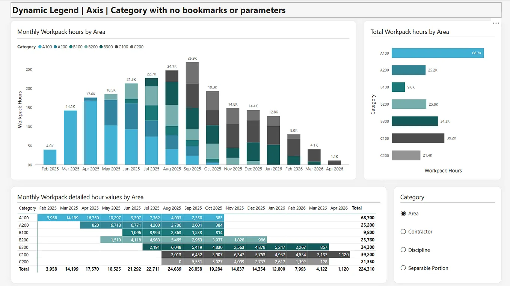
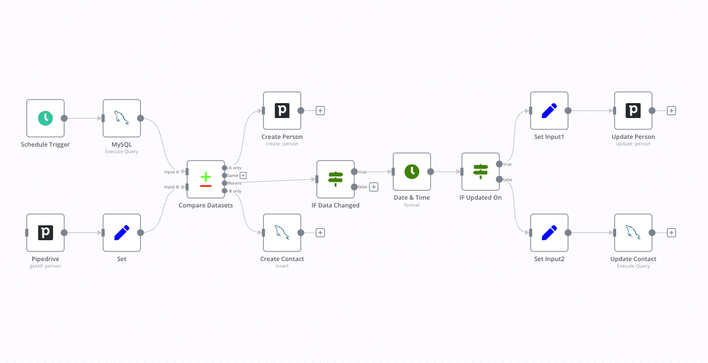

Dashboard Reporting
A project centered on turning information into clear summaries so users can understand trends, performance, and outcomes quickly.
View DetailsPersonal Portfolio
Aspiring Analyst interested in data, reporting, and automation
Welcome to my site
Welcome
This website introduces who I am, the kind of projects I enjoy, and how I approach clear and organized work. It uses only HTML, CSS, and JavaScript with relative links on every page.
My focus is on creating useful digital work that is easy to understand, visually clean, and accessible across desktop, tablet, and mobile screens.
These buttons use JavaScript to change the appearance of the page without reloading it.

A project centered on turning information into clear summaries so users can understand trends, performance, and outcomes quickly.
View Details
A project idea focused on making repeated work faster and more consistent by improving the way a process is organized.
Read More